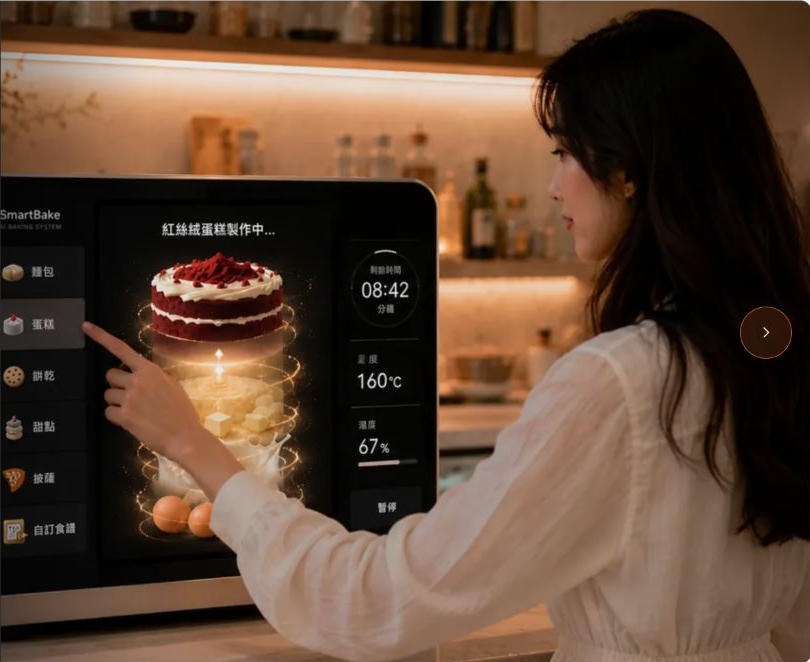
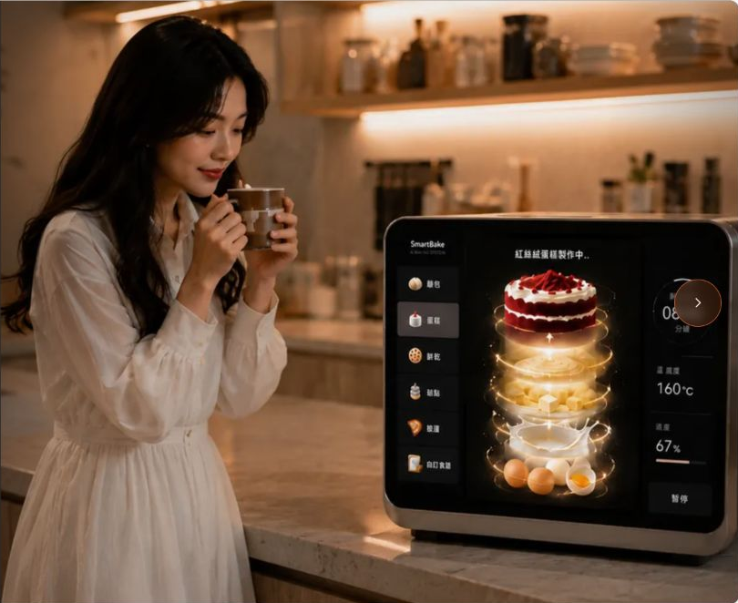
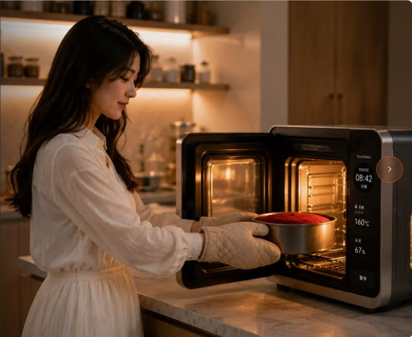
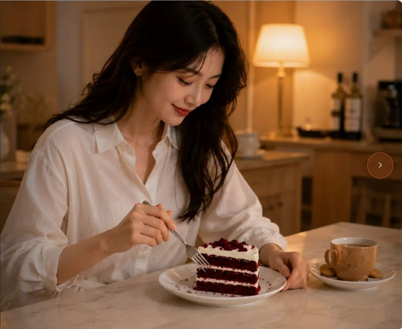

● BAKEX · AI BAKING SYSTEM
剛出爐的幸福
疲憊
TIRED · 疲れ 02 / 07
今天又加班到晚上八點多，拖著疲憊的身體回到家，腦袋一片空白，只想好好放鬆一下。以前這種時候，我總會想吃一塊蛋糕，但想到還要出門、叫外送、等待四、五十分鐘，甚至收到時蛋糕早就失去了剛出爐的香氣，我常常最後選擇放棄。
直到家裡多了這台智慧烘焙機。
Once again I worked overtime until past eight in the evening. I dragged my exhausted body home, my mind completely blank, wanting nothing but to relax. At moments like this I used to crave a slice of cake, but the thought of going out, ordering delivery, and waiting forty or fifty minutes — only to receive a cake that had already lost its fresh-baked aroma — often made me give up on the idea.
Then this smart baking machine came into my home.
今日も夜8時過ぎまで残業し、疲れきった体を引きずって家に帰った。頭の中は真っ白で、ただゆっくりくつろぎたいと思うだけだった。こんな時、いつもケーキが食べたくなるのだが、外に出て配達を頼み、40〜50分待ち、届く頃には焼き上がりの香りはすでに失われている——そう考えると、結局あきらめてしまうことが多かった。
そんな我が家に、このスマートベーキングマシンがやってきた。

選擇
CHOOSE · 選択 03 / 07
我走到機器前，輕觸螢幕，滑動著琳瑯滿目的甜點圖片，有紅絲絨蛋糕、起司蛋糕、巧克力蛋糕、可頌、餅乾……每一張圖片都像精品甜點櫃一樣精緻。我毫不猶豫地點下最想吃的紅絲絨蛋糕，按下開始後，心情竟然瞬間輕鬆了起來，因為我知道，等等迎接我的，將是一份剛出爐的幸福。
I walked up to the machine and gently tapped the screen, swiping through a dazzling array of dessert images — red velvet cake, cheesecake, chocolate cake, croissants, cookies... each picture looked as exquisite as something from a boutique dessert case. Without hesitation I tapped the red velvet cake I wanted most. The moment I pressed start, my mood instantly lightened, because I knew that what awaited me would be a freshly baked moment of happiness.
機械の前に歩み寄り、画面に軽く触れると、色とりどりのスイーツの写真が並んでいた——レッドベルベットケーキ、チーズケーキ、チョコレートケーキ、クロワッサン、クッキー……どの写真も高級スイーツショップのショーケースのように精緻だった。迷わず一番食べたいレッドベルベットケーキを選び、スタートボタンを押すと、心が一瞬でふっと軽くなった。これから待っているのは、焼き上がったばかりの幸せだと分かっていたから。

等待
WAIT · 待つ時間 04 / 07
同時，空氣裡開始瀰漫淡淡的奶油香、雞蛋香，以及蛋糕慢慢烘烤時才會出現的溫暖甜香。客廳的氣氛完全改變了，原本一天工作的疲憊，竟然在這股香氣裡慢慢消失。我替自己泡了一杯熱茶，坐在沙發上，看著螢幕裡蛋糕一步步完成，那幾分鐘沒有滑手機，也沒有工作的訊息打擾，只是靜靜享受等待一份幸福完成的過程。
At the same time, the air slowly filled with the faint scent of butter and eggs, along with the warm, sweet fragrance that only emerges as a cake is slowly baking. The whole mood of the living room changed completely — the fatigue from a full day of work gradually dissolved in that aroma. I made myself a cup of hot tea, sat on the sofa, and watched the cake come together step by step on the screen. For those few minutes there was no phone-scrolling, no work notifications — just the quiet enjoyment of waiting for a moment of happiness to be complete.
その間、部屋にはバターと卵のかすかな香り、そしてケーキがゆっくり焼かれる時にだけ現れる温かく甘い香りが広がっていった。リビングの雰囲気はすっかり変わり、一日の仕事の疲れがその香りの中で少しずつ消えていった。私は自分のために熱いお茶を一杯用意し、ソファに座って、画面の中でケーキが一歩一歩完成していく様子を見つめた。その数分間はスマホをいじることもなく、仕事の通知に邪魔されることもなく、ただ静かに、幸せが仕上がっていく時間を楽しんでいた。

烘焙
BAKE · 焼成 05 / 07
最吸引我的，是螢幕上的烘焙動畫。畫面最底層先出現新鮮雞蛋，接著雪白的牛奶慢慢流入，金黃色奶油緩緩融化，所有食材一層一層融合，變成柔軟細緻的麵糰，再逐漸膨脹、烘烤，最後蛻變成一顆完整又漂亮的紅絲絨蛋糕。整個過程像是在欣賞一場甜點誕生的藝術表演，而不是冷冰冰的進度條。
What captivated me most was the baking animation on the screen. At the very bottom, fresh eggs appeared first, then snow-white milk slowly poured in, followed by golden butter melting gently. All the ingredients blended together layer by layer, forming a soft, delicate dough that gradually rose and baked, finally transforming into a complete, beautiful red velvet cake. The whole process felt like watching an artistic performance of a dessert being born, rather than a cold, mechanical progress bar.
最も心を惹かれたのは、画面に映るベーキングアニメーションだった。一番下に新鮮な卵が現れ、続いて真っ白なミルクがゆっくりと流れ込み、黄金色のバターがとろりと溶けていく。すべての食材が層になって混ざり合い、柔らかく繊細な生地となり、やがて膨らみながら焼き上げられ、最後には美しいレッドベルベットケーキへと変わっていった。まるでスイーツが生まれる芸術的なパフォーマンスを眺めているようで、冷たい進行バーとはまったく違うものだった。

品嚐
TASTE · 味わう 06 / 07
當機器發出完成的提示音，我輕輕打開機門，一股熱騰騰、濃郁又自然的蛋糕香氣迎面而來，那一瞬間，我真的忍不住笑了。眼前的紅絲絨蛋糕比我想像中還要漂亮，蛋糕體蓬鬆細緻，奶油滑順飽滿，就像剛從高級甜點店端出來一樣。我切下第一口放進嘴裡，柔軟、濕潤、綿密，還帶著剛出爐的溫度，那種新鮮感是外送甜點完全無法取代的。
我忍不住對自己說：「原來，幸福真的可以不用等到假日，也不用特地去甜點店。」
現在每天回家，我最期待的，不是滑手機，而是站到這台機器前，挑選今天想吃的甜點。它帶給我的，不只是蛋糕，而是一種被自己好好照顧的感覺。
如果有人問我值不值得買，我一定會笑著回答：「它不是一台烘焙機，而是一位每天都在家裡等我下班的甜點師傅。每一次按下開始鍵，都像是在告訴自己：今天辛苦了，值得用一份剛出爐的幸福，好好犒賞自己。」
When the machine chimed to signal it was done, I gently opened the door, and a warm, rich, natural cake aroma greeted me. In that instant, I couldn't help but smile. The red velvet cake in front of me was even more beautiful than I imagined — the sponge fluffy and delicate, the cream smooth and full, just like something fresh from a high-end dessert shop. I cut the first bite: soft, moist, dense, still warm from the oven. That kind of freshness is something delivery desserts can never replace.
I couldn't help saying to myself, “Happiness really doesn't have to wait for the weekend, or require a special trip to a dessert shop.”
Now, what I look forward to most each day isn't scrolling my phone — it's standing in front of this machine, choosing the dessert I want today. What it gives me isn't just cake, but a feeling of truly taking care of myself.
If anyone asks whether it's worth buying, I'll always answer with a smile: “It's not just a baking machine — it's a pastry chef who waits for me at home every day after work. Every time I press start, it's like telling myself: you worked hard today, and you deserve a freshly baked moment of happiness.”
機械が完成を知らせる音を立てると、私はそっとドアを開けた。温かく濃厚で自然なケーキの香りが広がり、その瞬間、思わず笑みがこぼれた。目の前のレッドベルベットケーキは想像以上に美しく、スポンジはふんわりと繊細で、クリームは滑らかでたっぷりとしていて、高級スイーツ店から出てきたばかりのようだった。最初の一口は柔らかく、しっとりとして、きめ細かく、焼き上がりの温かさも残っていた。あの新鮮さは、デリバリーのスイーツでは絶対に味わえない。
私は思わず自分に言った。「幸せは休日を待たなくても、わざわざスイーツ店に行かなくても、本当に手に入るものなんだ」と。
今、毎日家に帰って一番楽しみなのは、スマホをいじることではなく、この機械の前に立って、今日食べたいスイーツを選ぶことだ。それが私にくれるのは、ケーキだけではなく、自分自身をきちんと大切にしているという感覚だ。
買う価値があるかと聞かれたら、私は笑ってこう答えるだろう。「これは単なるベーキングマシンではなく、毎日仕事を終えた私を家で待っていてくれるパティシエなんです。スタートボタンを押すたびに——今日もお疲れさま、焼き上がったばかりの幸せで自分をねぎらおう、そう思うのです。」
● BAKEX · BAKE. TASTE. SMILE.
全劇終 The End 完
Every day after work, a freshly baked happiness is waiting at home.
毎日、仕事の後には、焼き上がったばかりの幸せが家で待っている。